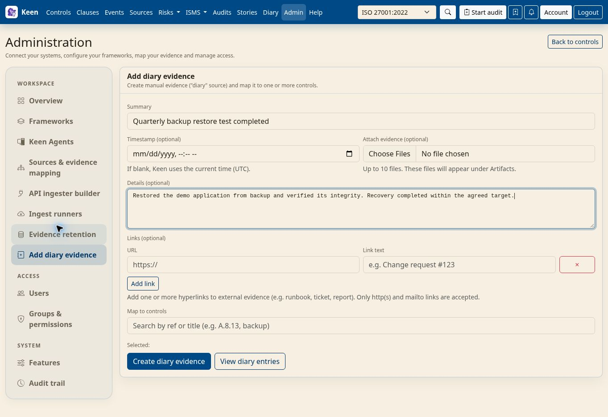

Administering Keen
Diary evidence
Chapter 23 of 30
Diary evidence
Diary evidence is the source for things people observe, such as a walkthrough, a review or a conversation. It uses Keen's ordinary signed-in interface and has no remote endpoint or polling credentials to configure.


- Choose Add diary evidence in the Workspace navigation and describe the activity, when it happened and the evidence it provides. Use accurate dates and enough context for another reviewer.
- Review the resulting event and create a mapping to the relevant controls or clauses.
Diary evidence takes part in evidence review, sampling, audits and retention like any other source.
Automatic entries from ISMS records
Saving a policy, process, asset, objective, SWOT, meeting, organisation chart node, effectiveness measure, risk or interested party with framework links records one automatic diary entry per record under the system name isms. The entry shows the record type, its current control and clause references and a link to the record, and contributes to each linked control's evidence counts, so the record counts towards control coverage on Home and the Controls page; record titles stay on the record. Risks imported from Risk Ledger get the same entry for the controls the import links them to.
Going deeper: visibility, updates, deletion and retention
Entries about risks are visible to users with risk read or manage permission, entries about interested parties to users with interested-party or risk read or manage permission, and entries about other records to users with ISMS or risk read or manage permission. Changing a record's links updates the same entry, stores a revision of it and credits each added mapping to the person who saved the record. Link changes wait while a manual evidence purge runs and for five minutes afterwards.
Deleting a record withdraws its entry. The entry stays, with its automatic mappings removed, when an administrator has edited it, a question thread or incident record refers to it, or an audit sample or another record references it. After an administrator edits an entry, its text stays as edited and its mappings continue to follow the record's links. Diary mapping rules also apply to automatic entries; an exact system condition of manual limits a rule to manual entries. Automatic entries are excluded from evidence retention and its purges.